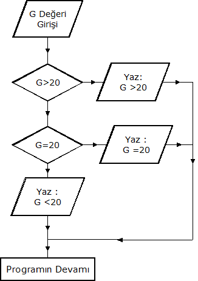

Ada Programlama Dili Temelleri
Bölüm 5
Program Akışının Yön Değiştirmesi
Bölüm 5 Sayfa 2
5.2 Mantıksal Program Dallanması (Devam)
Yukarıdaki prosedürde çözümlenmeye çalışılan problemde aslında iki değil üç olasılık bulunmaktadır. Bu olasılıklar, girilen verinin 20 den büyük, 20 ye eşit ve 20 den küçük olabilme olasılıklarıdır. Problemin tam olarak çözümü için, iki ardışık karar mekanizmasına gereksinme bulunmaktadır. Bu problem için, tam çözümün sağlanacağı bir programın akış şeması aşağıda görülmektedir.

Şekil 5.2-4 Çoklu Karar Mekanizması
Çoklu karar mekanizmaları, programlarda çok rastlanılan bir yapılanmadadır. Şekl 5.2-4 deki akım şemasında, çoklu karar mekanizmasını çözümlesi gereken programda olasılılar denenmekte ve gerçekleşen olasılığın belirttiği bildirim veya bildirimler çalıştırılmakta ve program bir alt satırdan devam etmektedir.
Çoklu karar sistemlerinde, ilk olarak, gerçekleştiği takdirde, diğerlerinin kesin gerçekleşmeyeceği koşulun ilk denenecek karar mekanizmasında sınanması öoklu karar makanizmasının yüryüşüne hız kazandıracaktır. Burada ilk önce sınanan koşul gerçekleşirse, diğerlerinin gerçaklaşma olasılığı olmadığından kontrol diğer karar mekanizmalarında sınama yapmadan bir alt satıra geçecektir.
Modern programlama dilleri, çoklu karar mekanizmalarının çözümlenmesi için klasik if... , else if... else yapılanması yanında, daha modern case yapılanmasını da sağlamaktadırlar. Burada her iki yöntemi de uygulayacağız.
Ada programlama dili, çoklu karar mekanizmalarının klasik yöntemle çözümlenmesi için if... , elsif..., else yapılanmasını sunmaktadır. Aşağıda, Şekil 5.2-4 deki akım şemasının, bu yapılanma kullanılarak çözümlenmesini sağlayacak bir programın pseudocode çalışması görülmektedir. Pseudo klasik Grekçe sahte anlamını taşımaktadır. Programcılıkta pseudocode, programlama diline benzeyen, fakat daha kısa ve sadece yapılacak işlemleri belirten bir tür program taslağı olarak uygulanır. Pseudocode, bir tür sözel, akım şeması gibi düşünülebilir.
.. Oku G; if G > 20 Print " G > 20"; elsif G = 20 Print " G = 20"; else Print " G < 20" end if; ....
Pseudocode, eğer ilk iki koşul gerçekleşmezse, üçüncüsünün mutlaka gerçekleşeği ve bunun için sorgulama gerekmediğini belirtmektedir. Ada if... , elsif..., else yapılanması, ilk iki sınamayı gerçekleştirecek ve ilk sınama gerçekleşirse, konrolü otomatik olarak yapılanma sonu end if bildiriminden bir sonraki satıra aktaracaktır. Eğer ilk sorgulama gerçek olmazsa, ikincisine geçilecek ve eğer bu kontrol sonucu gerçek olursa, bir mesaj bastırarak kontrolü yine end if bildiriminden bir sonraki satıra aktaracaktır. Eğer bu kontrol sonucu da doğrulanmazsa, o vakit geriye sadece verinin 20 den küçük olması olasılığı kalmakta ve kontrol else bildirimine geçip bu mesajı görüntülemekte ve kontrolü if bloğunu izleyen ilk satıra aktarmaktadır. Aşağıda görülen prosedürde, pseudokodun gerçek programı görülmektedir.
with Ada.Text_IO; with Ada.Integer_Text_IO; procedure b5_2_uyg_3 is G : Integer; begin Ada.Text_IO.Put(Item => "Lütfen Bir Tamsayı Giriniz : "); Ada.Integer_Text_IO.Get(Item => G , Width => 5 ); if G > 20 then Ada.Text_IO.Put_Line("G Değeri 20 den Büyüktür !"); elsif G = 20 then Ada.Text_IO.Put_Line("G Değeri 20 ye Eşittir !"); else Ada.Text_IO.Put_Line("G Değeri 20 den Küçüktür !"); end if; Ada.Text_IO.Put(Item => "Program Tamamlandı ! "); end b5_2_uyg_3;
Yukarıdaki prosedürün çalışmasının sonucu, girilen G değerine göre üç olasılıklı olarak şekillenir.
Eğer girilen G değeri 20 den büyükse, program sonucu,
Lütfen Bir Tamsayı Giriniz : 60
G Değeri 20 den Büyüktür !
Program Tamamlandı !
şeklinde olmaktadır.
Eğer girilen G değeri 20 ye eşit ise, program sonucu,
Lütfen Bir Tamsayı Giriniz : 20
G Değeri 20 ye Eşittir !
Program Tamamlandı !
şeklinde olmaktadır.
Eğer girilen G değeri 20 den küçükse, program sonucu,
Lütfen Bir Tamsayı Giriniz : 15
G Değeri 20 den Küçüktür !
Program Tamamlandı !
şeklinde olmaktadır.
Çoklu karar mekanizmalarının çözümlenmesi, prensip olarak if... , else if... else yapılanması ile çözümlenir. Durum uygun olursa, daha güncel ve modern case yapılanması da kullanılabilir. Burada dikkat edilecek nokta, iki yapılanma arasında temel bir farkın olduğuğur. İlk yapılanmanın sadece sonucu Boolean olan ifadeleri değerlendirebilmesine karşın, case yapılanmasının sadece sayılabilir ve tamsayı veri tiplerinin değerlerini değerlendirebilir. Bunun yanında case yapılanması, belirli bir ayrık veri tipinin değerlerinin belirli bir kapsam aralığında olup olmadığını da kontrol eder ve bu olanak bazen bir değerden büyüklük veya küçüklük kontrolü yerine kullanılabilir.
Ada programlama dilinde case yapılanmasının sözdizimi,
case_statement ::=
case expression is
case_statement_alternative
{case_statement_alternative}
end case;
case_statement_alternative ::=
when discrete_choice_list =>
sequence_of_statements
Ada case yapılanması oldukça karmaşık kullanım koşullarını içerir. Tanımda görülen ifade, her türlü ayrık (discrete) tipin ifadesi olabilir. her türlü ayrık seçenek listesi (discrete_choice_list) biriminin veri tipinin, baştaki ifadenin veri tipi olması beklenir.
Eğer ifade kısıtlı ve isimli bir veri alt tipi ise, ( her isimli veri tipi isimsiz bir tipin alt tipi olarak kabul edilir!) bu durumda, seçenek listesi bu tipin tüm değerlerini kapsamalıdır. Bu kapsam ya seçenek listesinde bu alt tipin tüm değerleri belirtilir ve derleyici veri tipinin tüm değerleri ile ne yapması gerektiğini belirsizliğe düşmeden algılar, veya açık bir şekilde others bildirimi ile seçenek listesi dışındaki değerlerle ne yapılması gerektiği bildirilir.
Ada case yapılanması, baştaki ifadenin veri tipinin tüm değerlerini tarar ve sadece belirtilen değerleri konrol ile sınırlı kalmaz. Bu nedenle, sayılabilir ver itpleri gibi, eleman sayısı sınırlı ve belli veri tiplerinin tüm değerlerinin ayrık seçenek listelerinde bulunması durıumunda, others seçeneğinin belirtilmesine gerek kalmaz. Fakat, tamsayı alt tipleri geniş bir kapsam aralığına sahip veri tipleriinin ifadeleri tarandığında, mutlaka others seçeneğinin belirtilmesine gerek vardır. Aksi durumda, derleyici seçenek listelerinde belirtilmeyen değerlerle ne yapacağını kestiremez ve çelişikiye düşer, program derlenemez.
Ada case yapılanmasında her when saklı sözcüğünü izleyen değer veya kapsam aralıkları, mutlaka statik (değerleri, derleme anından önce belli) olmalıdır.
Seçenek listelerinde aynı değer birden fazla kullanılamaz.
Seçenek listelerinde others seçeneği, bir tür else seçeneği gibi hareket eder, bu nedenle, others seçeneği, seçeneklistelerinin en sonuna konulur. Seçenek listesindeki tüm seçenekler tükenmeden, others seçeneği değerlendirilmez.
Seçenek listelerinde others seçeneğinde yapılacak şey bilinmiyorsa, when others => null; ifadesi konulur.
Ada case yapılanmalarında, önce ifade değerlendirilir. Eğer, ifadenin değerlerdirme sonucu, seçenekler listesindeki değerleri kapsamadığı belirlenirse, kapsam aşımı hatası (Constraint Error) ortaya çıkar.
Şekil 5.2-4 de görülen ve çoklu karar mekanizması içeren akım şemasının case yapılanması ile çözümlenmesinin pseudokod çalışması aşağıda görülmektedir.
... Oku G; case G is when 21 .. Integer'Last => Print " G > 20"; when 20 => Print " G = 20"; when others => Print " G < 20" end case; ....
Aşağıda görülen prosedürde, pseudokodun gerçek programlanması görülmektedir.
with Ada.Text_IO; with Ada.Integer_Text_IO; procedure b5_2_uyg_4 is G : Integer; begin Ada.Text_IO.Put(Item => "Lütfen Bir Tamsayı Giriniz : "); Ada.Integer_Text_IO.Get(Item => G , Width => 5 ); case G is when 21 .. Integer'Last => Ada.Text_IO.Put_Line("G Değeri 20 den Büyüktür !"); when 20 => Ada.Text_IO.Put_Line(Item =>"G Değeri 20 ye Eşittir !"); when others => Ada.Text_IO.Put_Line(Item => "G Değeri 20 den Küçüktür !"); end case; Ada.Text_IO.Put(Item => "Program Tamamlandı ! "); end b5_2_uyg_4;
Yukarıdaki prosedürün çalışmasının sonucu, girilen G değerine göre üç olasılıklı olarak şekillenir.
Eğer girilen G değeri 20 den büyükse, program sonucu,
Lütfen Bir Tamsayı Giriniz : 40
G Değeri 20 den Büyüktür !
Program Tamamlandı !
şeklinde olmaktadır.
Eğer girilen G değeri 20 ye eşit ise, program sonucu,
Lütfen Bir Tamsayı Giriniz : 20
G Değeri 20 ye Eşittir !
Program Tamamlandı !
şeklinde olmaktadır.
Eğer girilen G değeri 20 den küçükse, program sonucu,
Lütfen Bir Tamsayı Giriniz : 12
G Değeri 20 den Küçüktür !
Program Tamamlandı !
şeklinde olmaktadır.
5.3 Mantıksal Olmayan Program Dallanması (GOTO Yöntemi)
Ada programlama dili, salt eskiye uyum ve eksiklik kalmaması için, Pascal döneminden kalma GOTO bildirimi ile program kontrolünü belirli bir koşul gerçekleştiğinde veya koşulsuz olarak etiketlendirilmiş (Label) bir satıra atlatır. Bu işlem aşağıdaki gibi uygulanabilir:
... GOTO atla; ... -- Bu satırlar çalıştırılmayacaktır-- ... <<atla>> -- İlk Çalıştırılacak Satır -- ...
GOTO deyimi, istenirse koşullu olarak da aşağıdaki gibi uygulanabilir:
if KOŞUL then GOTO atla; end if;
GOTO bildirimi salt eksiklik kalmasın diye Ada programlama dili içinde bırakılmıştır ve kullanımı, programın mantıkla ilgisi olmayan bir şekilde, kontrolsüz olarak yön değiştirmesi ile sonuçlanır. Bu şekilde, izlenmesi kolay olmayan, hatta bazen izlenmesi olanaksız hale gelen, düzensiz programlar ortaya çıkar. Günümüzde GOTO deyimi, Şeytanla eşdeğer tutulur ve aynı şekilde kaçınılır. Bu konuda tüm deneyimli programcılar, koro halinde bu bildirimi programlarda kullanmamayı sağlık verirler. Biz de tam olarak bu koroya katılıyoruz. Deneyimin değeri vardır.